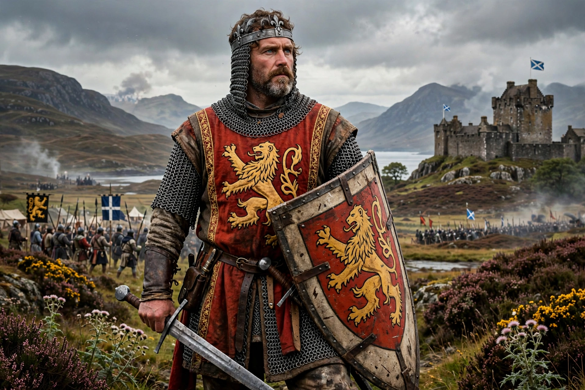

| King of Scots | 25 March 1306 – 7 June 1329 |
|---|---|
| Born | 11 July 1274, Turnberry Castle, Ayrshire |
| Died | 7 June 1329, Cardross, Dunbartonshire |
| Burial | Dunfermline Abbey |
Robert I (11 July 1274 – 7 June 1329), popularly known as Robert the Bruce, was King of Scots from 1306 to his death in 1329. One of the most famous warriors of his generation, he led Scotland in the First War of Scottish Independence against England.
Robert was Earl of Carrick and a descendant of David I. His family claimed the Scottish throne as rivals to John Balliol during the Great Cause.
In 1306 Bruce killed his rival John Comyn at Greyfriars Kirk, Dumfries, and was crowned at Scone, then was defeated and driven into exile. Legend tells of a spider in a cave inspiring him to persist. He returned to win guerrilla victories culminating in the Battle of Bannockburn (1314) against Edward II. The Declaration of Arbroath (1320) asserted Scottish independence, and England recognized it by the Treaty of Edinburgh–Northampton (1328).
Bruce died at Cardross, possibly of leprosy according to later tradition. His body was buried at Dunfermline and his heart, taken on crusade by Sir James Douglas, at Melrose Abbey. He remains a national hero of Scotland.